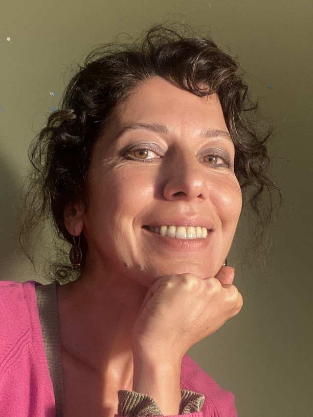

Computer engineer, NLP and machine learning researcher, Istanbul.
I’m a computer engineer working on natural language processing and machine learning. My recent work is on multilingual NLP pipelines, speech processing, retrieval-augmented systems on locally deployed language models, and information extraction. My research centres on low-resource languages and the way large language models generate language. I am also interested in theoretical computer science, especially computability, complexity and randomness.
Since 2020 I have run Lucitext, a small research and development studio.

Language and speech systems for client work, from research prototypes to systems in production, for teams in telecommunications, SaaS and enterprise software.
Text processing and machine learning applications with a team, researching and developing NLP methods for Turkish, English, French and Arabic.
Fallacy detection in user-generated argumentative content: argumentation theory, annotation studies towards a dataset, and models for the task.
Logic, automata theory, linear algebra, NLP and introductory programming; co-supervision of undergraduate machine learning and NLP projects.
Coursework completed.
Thesis: Detecting Subjectivity in the News Texts in Turkish Language, advised by Prof. Albert Ali Salah. A supervised approach to subjectivity in Turkish news, with a new annotated corpus and features adapted to Turkish morphology.
Thesis: Analysis and Prediction in Academic Collaboration Networks, advised by Prof. Zehra Çataltepe.
Emotion recognition in Turkish speech, from data collection to deployment. Zero-shot models confused several emotions; fine-tuning on Turkish speech narrowed the gap.
More than thirty text analysis tasks, among them zero-shot classification, named entity recognition and emotion recognition, on BERT-family models.
Ranking and prioritisation for a multi-tenant software product, with automated training, model selection and monitoring.
Extraction and classification for a task and email platform, developed and maintained over four years.
Text classification, intent detection and dialogue components for Turkish, English, French and Arabic, written from scratch where Turkish had no tools.
Open source
Tests whether language models produce usable text in endangered languages, recording every prompt and response.
A modular text classification pipeline with research notes, from my graduate years.
Language identification from character n-gram profiles.
Language models and human languages, methods for under-resourced languages, speech, information extraction and retrieval. On the theoretical side: theory of computation, complexity and quantum computation, and what randomness and compression can say about the difference between language and language models.
Do language models produce anything usable in Kirmanckî (Zazaki), Adyghe, Kabardian and Homshetsma, and in the right language and script? Kurmanji serves as a better-resourced control.